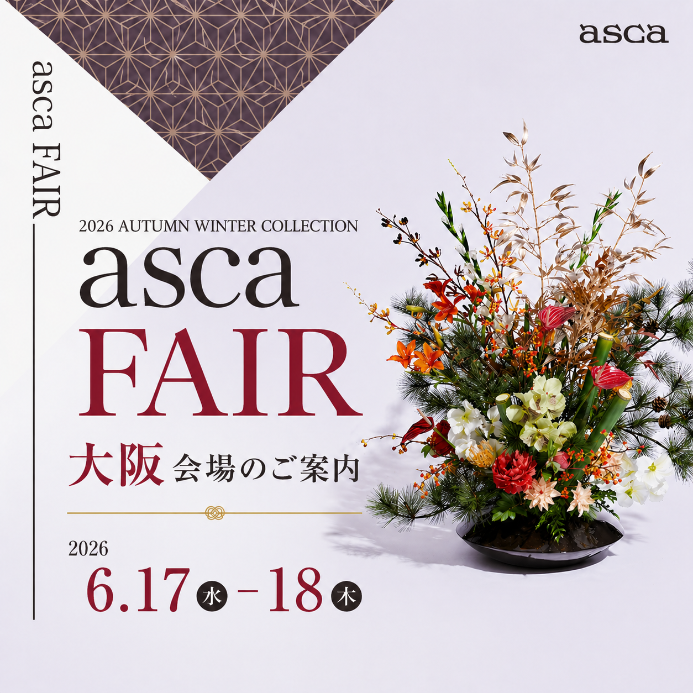

来季の物語、はじまる二日間。
Osaka Sangyo Sozokan

アーティフィシャルフラワーのパイオニア asca社 による、年に一度の新作発表会。 来季の物語を、二日間限りでご紹介します。
本展示会は完全予約制です。
ご予約フォームの「お取引先名（ご帳合先名）」欄に必ず「神戸リボン」とご記入ください。
Web 予約締切日 — 2026 年 6 月 11 日（木）
asca社のデザイナーが、新作コレクションを用いたアレンジメントの制作プロセスを披露する、二日間限りの特別プログラム。
毎年早い段階で満席となる人気プログラムです。
観覧をご希望の方は、ご予約フォーム内の「デモンストレーション観覧希望」項目で、ご希望の回をお選びください。
〒541-0053
大阪市中央区本町一丁目4番5号
3F マーケットプラザ
中央線：1号出口より徒歩約 5 分／堺筋線：12号出口より徒歩約 5 分
| JR新大阪 | 御堂筋線「本町」→ 中央線「堺筋本町」 | 16′ |
|---|---|---|
| JR大阪 / 梅田 | 御堂筋線「本町」→ 中央線「堺筋本町」 | 9′ |
| 難波 | 御堂筋線「本町」→ 中央線「堺筋本町」 | 7′ |
| 天王寺 | 御堂筋線「本町」→ 中央線「堺筋本町」 | 11′ |
| 京都 | JR新快速「新大阪」→ 御堂筋線 → 中央線「堺筋本町」 | 45′ |
| 三宮 | 阪急 / 阪神「大阪梅田」→ 御堂筋線 → 中央線「堺筋本町」 | 45′ |
展示会用の弊社契約駐車場のご案内はございません。
公共交通機関でのご来場をお願いいたします。
Web 予約締切日 — 2026 年 6 月 11 日（木）
予約フォームの「お取引先名（ご帳合先名）」欄に「神戸リボン」とご記入ください。
asca — 1971 年創業。アーティフィシャルフラワー業界のパイオニアとして、高品質な製品を提供し続けるブランド。
ご注文・お問い合わせは神戸リボン LINE 公式アカウントにて承ります。